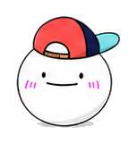

今日の結果はどうだった？一緒に振り返ろう。
今日の練習メニュー
試合前チェックリスト
試合スコア
今日の結果メモ
ルール解説
参照: 日本ソフトテニス連盟「ソフトテニスとは」 / JSTA 審判・技術等級 / JSTA ソフトテニス用語 / JSTA 競技規則PDF

参照: 日本ソフトテニス連盟「ソフトテニスとは」 / JSTA 審判・技術等級 / JSTA ソフトテニス用語 / JSTA 競技規則PDF